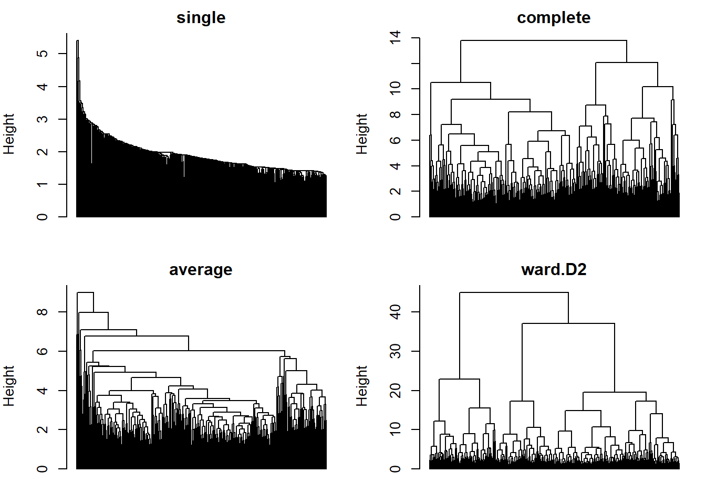
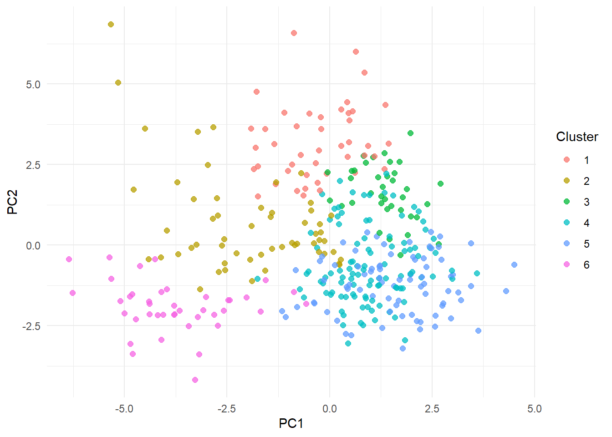

linkages <- c("single", "complete", "average", "ward.D2")
trees <- lapply(linkages, function(method) hclust(D, method = method))
names(trees) <- linkages6.3 Hierarchical Clustering
1 Learning objectives
After this tutorial, you should be able to:
- describe agglomerative clustering and the role of the linkage rule;
- define single, complete, average, centroid, and Ward linkage and use the Lance-Williams update to relate them;
- read a dendrogram and explain why its heights, not its left-right order, carry information;
- evaluate a tree with the cophenetic correlation and cut it at several resolutions;
- use hierarchical clustering for comparables as well as archetypes; and
- state the strengths and weaknesses of hierarchical methods relative to k-means.
2 From points to a tree
k-means produces one partition at one resolution. Hierarchical clustering produces a tree that contains a partition at every resolution, from singletons to one cluster. The agglomerative version builds the tree bottom-up:
- start with every observation in its own cluster;
- merge the two closest clusters;
- update the distances between the new cluster and every other cluster; and
- repeat until one cluster remains.
The only decision is how to measure the distance between two clusters when we only have distances between points. That decision is the linkage rule, and different rules produce very different trees.
3 Linkage rules
For clusters and with pairwise point distances :
| Linkage | Cluster distance | Tendency |
|---|---|---|
| single | long chains; finds elongated or irregular shapes; sensitive to noise | |
| complete | compact, similar-diameter clusters; breaks large true clusters | |
| average (UPGMA) | compromise; the most common default with non-Euclidean distances | |
| centroid | can produce inversions (a merge lower than an earlier one) | |
| Ward | increase in within-cluster sum of squares from merging | spherical, similar-size clusters; the hierarchical relative of k-means |
Ward’s criterion merges the pair whose union has the smallest increase in the k-means objective,
The last form shows that Ward is a centroid distance weighted by cluster sizes, which discourages absorbing a large cluster into a small one.
3.1 The Lance-Williams update
Every rule above can be run from the distance matrix alone with one recursion. After merging and into , the distance to any other cluster is
with coefficients that define the linkage:
| Linkage | ||||
|---|---|---|---|---|
| single | 1/2 | 1/2 | 0 | |
| complete | 1/2 | 1/2 | 0 | |
| average | 0 | 0 | ||
| Ward (squared distances) | 0 |
The recursion is why the algorithm is in memory and, with a good implementation, in time. It is comfortable for hundreds or a few thousand players and impractical for hundreds of thousands of shots.
4 Build the trees
ward.D2 applies Ward’s criterion to the Euclidean distances as intended; the older ward.D option expects squared distances.
par(mfrow = c(2, 2), mar = c(1, 4, 2, 1))
for (method in linkages) {
plot(trees[[method]], labels = FALSE, main = method, xlab = "", sub = "", hang = -1)
}
Single linkage chains one player at a time onto a growing blob, which is its usual behavior on data without gaps. Complete and Ward linkage produce balanced branches. Average linkage sits between them.
4.1 Reading a dendrogram
- The height at which two branches join is the linkage distance at that merge. Two players joined near the bottom are close; two branches joined near the top are far apart.
- The left-right order is arbitrary. Any branch can be flipped without changing the tree, so adjacency along the bottom means nothing unless the two leaves share a low merge.
- A long vertical gap below a merge means the merged groups were well separated at that resolution; cutting the tree inside a long gap gives a stable partition.
4.2 The cophenetic correlation
The tree implies a distance between every pair of players: the height at which they are first joined, called the cophenetic distance. The correlation between the cophenetic distances and the original distances measures how faithfully the tree represents the data.
data.frame(
linkage = linkages,
cophenetic_correlation = sapply(trees, function(tree) cor(D, cophenetic(tree)))
) %>%
knitr::kable(digits = 3, row.names = FALSE)| linkage | cophenetic_correlation |
|---|---|
| single | 0.647 |
| complete | 0.514 |
| average | 0.727 |
| ward.D2 | 0.488 |
Compare the correlations to see which tree best preserves the original distances in this dataset. Average linkage averages distances when deciding which clusters to merge; it does not guarantee the highest cophenetic correlation or the smallest overall squared distortion. Ward’s method follows a different objective: limiting increases in within-cluster squared variation.
NoteSimple example: calculating the cophenetic correlation
Suppose three hypothetical players have values , , and on one feature. Their original distances are absolute differences:
| Pair | Original distance |
|---|---|
| A–B | |
| A–C | |
| B–C |
Step 1: Build a small tree using average linkage. A and B are closest, so they merge at height . Their new cluster then merges with C at height
Step 2: Read the cophenetic distances from the tree. For each pair, find the height at which both players first belong to the same cluster:
| Pair | Original distance | Cophenetic distance | Reason |
|---|---|---|---|
| A–B | 2 | 2 | They first join at height 2. |
| A–C | 5 | 4 | They first share a cluster at the final merge. |
| B–C | 3 | 4 | They first share a cluster at the final merge. |
The tree represents both distances to C by the same height, , even though the original distances are and . This is how a tree can simplify, and distort, the original distances.
Step 3: Correlate the two columns. Use each distinct pair once, in the same order, excluding the diagonal and duplicate reverse pairs. The vectors are
Both means are . Pearson’s correlation is
Interpretation: the tree preserves some of the pattern of which pairs are near or far, but does not reproduce all the original distances. Higher correlation means stronger linear agreement between distances and merge heights. A correlation of indicates perfect positive linear agreement, which does not require the two columns to be numerically identical.
Here is the calculation in R:
cophenetic_example <- matrix(
c(0, 2, 5), ncol = 1,
dimnames = list(c("A", "B", "C"), "feature")
)
example_distances <- dist(cophenetic_example)
example_tree <- hclust(example_distances, method = "average")
example_cophenetic <- cophenetic(example_tree)
data.frame(
cophenetic_correlation = cor(example_distances, example_cophenetic)
) %>% knitr::kable(digits = 3)| cophenetic_correlation |
|---|
| 0.756 |
What this checks: how faithfully the tree summarizes the chosen distances. It does not choose a number of clusters or prove that useful player groups exist. See the R documentation for cophenetic distances.
5 Cutting the tree
A partition is obtained by cutting the tree at a height or by asking for clusters.
ward <- trees[["ward.D2"]]
cuts <- sapply(c(2, 4, 6, 8, 12), function(k) cutree(ward, k = k))
colnames(cuts) <- paste0("k_", c(2, 4, 6, 8, 12))
apply(cuts, 2, function(labels) paste(sort(table(labels), decreasing = TRUE), collapse = ", ")) %>%
data.frame(cluster_sizes = .) %>%
knitr::kable()| cluster_sizes | |
|---|---|
| k_2 | 263, 97 |
| k_4 | 182, 81, 56, 41 |
| k_6 | 103, 79, 56, 44, 41, 37 |
| k_8 | 103, 44, 44, 41, 37, 35, 33, 23 |
| k_12 | 63, 44, 40, 38, 37, 35, 33, 29, 17, 12, 6, 6 |
Because the tree is nested, the six-cluster solution is a refinement of the four-cluster solution: no player changes branch when increases, only branches split. That is a property k-means lacks, and it makes hierarchical results easier to explain.
pca <- prcomp(X)
profiles$ward_6 <- factor(cutree(ward, k = 6))
data.frame(pca$x[, 1:2], cluster = profiles$ward_6) %>%
ggplot(aes(PC1, PC2, color = cluster)) +
geom_point(alpha = 0.75, size = 2) +
labs(color = "Cluster") +
theme_minimal()
5.1 Compare with k-means
set.seed(431)
kmeans_6 <- kmeans(X, 6, nstart = 50, iter.max = 100)
data.frame(
comparison = "Ward (k = 6) versus k-means (k = 6)",
adjusted_rand_index = adjusted_rand_index(profiles$ward_6, kmeans_6$cluster),
ward_within_ss = within_cluster_ss(X, profiles$ward_6),
kmeans_within_ss = kmeans_6$tot.withinss
) %>%
knitr::kable(digits = 3)| comparison | adjusted_rand_index | ward_within_ss | kmeans_within_ss |
|---|---|---|---|
| Ward (k = 6) versus k-means (k = 6) | 0.278 | 2729.138 | 2443.902 |
Ward and k-means optimize the same objective, but Ward is greedy and never revisits a merge, so its within-cluster sum of squares is noticeably larger and the two partitions differ at many boundaries. A common practice is to use Ward’s solution as the starting point for k-means, which keeps the interpretability of the tree and polishes the partition.
6 Comparables from the tree
Cutting the tree low produces many small clusters, the “comparables” use of Tutorial 6.1. At the average cluster holds about nine players.
profiles$ward_40 <- cutree(ward, k = 40)
comparables <- function(name) {
cluster <- profiles$ward_40[profiles$player == name]
profiles %>%
filter(ward_40 == cluster, player != name) %>%
arrange(desc(minutes)) %>%
pull(player)
}
data.frame(
player = c("Jalen Brunson", "Rudy Gobert", "Mikal Bridges"),
comparables = sapply(c("Jalen Brunson", "Rudy Gobert", "Mikal Bridges"), function(p) paste(head(comparables(p), 6), collapse = ", "))
) %>%
knitr::kable(row.names = FALSE)| player | comparables |
|---|---|
| Jalen Brunson | Damian Lillard, LeBron James, Devin Booker, Stephen Curry, Brandon Ingram, Cade Cunningham |
| Rudy Gobert | Dwight Powell, Bruno Fernando, Mason Plumlee |
| Mikal Bridges | Miles Bridges, Brandon Miller, Tim Hardaway Jr., Corey Kispert, Keldon Johnson, Norman Powell |
Cluster-based comparables have one advantage over nearest neighbors: the group is the same no matter which member you start from, so it can be summarized once. The disadvantage is that a player near a cluster boundary has closer neighbors across it than inside it.
7 Divisive clustering
The top-down alternative, DIANA (divisive analysis), starts with one cluster and repeatedly splits the cluster with the largest diameter by moving out the observation with the largest average dissimilarity and then everyone closer to the splinter group. It is more expensive but makes its biggest decisions first, which can matter when the top-level structure is what you want.
diana_fit <- diana(D)
data.frame(
comparison = "DIANA (k = 6) versus Ward (k = 6)",
adjusted_rand_index = adjusted_rand_index(cutree(as.hclust(diana_fit), k = 6), profiles$ward_6),
divisive_coefficient = diana_fit$dc
) %>%
knitr::kable(digits = 3)| comparison | adjusted_rand_index | divisive_coefficient |
|---|---|---|
| DIANA (k = 6) versus Ward (k = 6) | 0.346 | 0.842 |
The divisive coefficient, like the agglomerative coefficient of agnes(), measures the strength of the clustering structure found (values near 1 mean clear structure). Values in the middle of the range are typical for player data.
8 Strengths and weaknesses
Hierarchical clustering offers:
- a result at every resolution from one run, with nested partitions;
- freedom to use any dissimilarity, including Gower and correlation distances; and
- a picture, the dendrogram, that communicates structure without choosing first.
Its costs are:
- memory, which rules out very large data sets;
- greedy merges that are never revised, so a bad early merge persists; and
- strong dependence on the linkage rule, which must be justified rather than defaulted.
9 Practice
- Three clusters have pairwise distances , , . After merging and , what is the distance to under single, complete, and average linkage if ?
- Why can centroid linkage produce a merge at a lower height than an earlier merge, and why can Ward and average linkage not?
- Explain why cutting a tree at and at gives partitions that agree on all but one cluster.
- A dendrogram shows two players adjacent at the bottom. What, if anything, does that imply about their distance?
TipShow answers
- Single ; complete ; average .
- The centroid of a merged cluster can be closer to a third cluster than either original centroid was, violating monotonicity; single, complete, average, and Ward distances never decrease after a merge.
- The tree is nested: the seven-cluster partition is obtained from the six-cluster partition by splitting exactly one cluster.
- Nothing by itself. Adjacent leaves may belong to branches that join near the top; only the merge height carries information.
10 Key takeaways
- Agglomerative clustering builds a nested tree; the linkage rule defines the distance between clusters and shapes everything.
- Single linkage chains, complete and Ward compact, average compromises; the Lance-Williams recursion runs them all.
- Read heights, not horizontal order; use the cophenetic correlation to judge the tree’s fidelity.
- Cut high for archetypes and low for comparables; the same tree serves both.